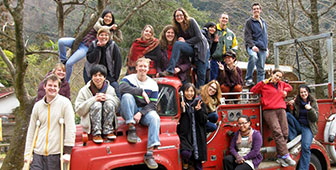

Retreats
JCF Retreats are usually held biannually, over a long weekend in a central location in Japan. On average, nearly 30 JETs, non-JET foreigners, as well as Japanese people attend JCF retreats. If you haven’t attended one yet, we highly recommend them!
Next Retreat: Golden Week 2022 (details are ‘to be confirmed’)

“JCF Retreats are always fun and memorable experiences for me. I’m currently the only foreigner at my church so I don’t often get to learn and worship in English. It can feel a bit isolating at times. That’s one of the reasons the retreats mean so much to me. It’s wonderful to be able to fellowship and worship together with other English speakers who are in roughly the same situation. It’s definitely a refreshing time, spiritually and culturally. The friends I’ve made at these retreats are true friends who will stay in my heart for years to come.” - Megan Daniel